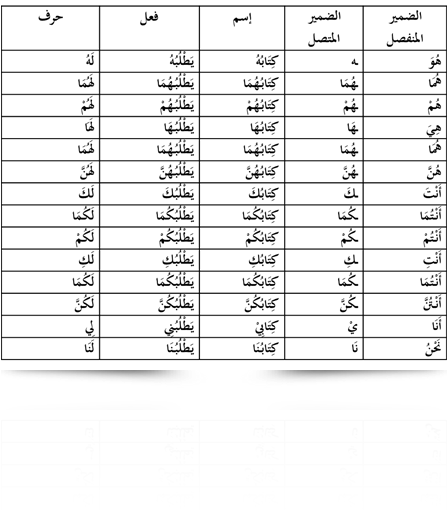

Perhatikan Contoh berikut ini;
Contoh 1 :
Contoh 1 :
- هُوَطَالِبٌ - إِيَّاهُ مَدَحَ الْمُدَرِّسُ
- أَنْتَ طَالِبٌ - إِيَّاكَ نَعْبُدُ
- أنْتِ طَالِبَةٌ - إِيَّاكِ أُوْصِى بِتَقْوَى اللهَ
- أَنْتَ طَالِبٌ - إِيَّاكَ نَعْبُدُ
- أنْتِ طَالِبَةٌ - إِيَّاكِ أُوْصِى بِتَقْوَى اللهَ
-Kata ganti orang pertama, kedua, dan ketiga disebut isim dhamir.
-Isim dhamir yang digunakan sebagai subyek dalam kalimat sebagai berikut:
هُوَ، هُمَا ،هُمْ، هِيَ هُمَا ، هُنَّ ، أَنْتَ، أَنْتُمَا، أَنْتُمْ، أَنْتِ، أَنْتُمَا، أَنْتُنَّ، أَنَا، نَحْنُ
-Sedangkan dhamir yang digunakan sebagai objek sebagai berikut:
إِيَّاهُ ، إِيَّاهُمَا، إِيَّاهُمْ، إِيَّاهَا، إِيَّاهُمَا، إِيَّاهُنَّ، إِيَّاكَ، إِيَّاكُمَا، إِيَّاكُمْ، إِيَّاكِ، إِيَّاكُمَا، إِيَّاكُنَّ ، إِيَّايَ، إِيَّانَا
-Isim dhamir yang digunakan sebagai subyek dalam kalimat sebagai berikut:
هُوَ، هُمَا ،هُمْ، هِيَ هُمَا ، هُنَّ ، أَنْتَ، أَنْتُمَا، أَنْتُمْ، أَنْتِ، أَنْتُمَا، أَنْتُنَّ، أَنَا، نَحْنُ
-Sedangkan dhamir yang digunakan sebagai objek sebagai berikut:
إِيَّاهُ ، إِيَّاهُمَا، إِيَّاهُمْ، إِيَّاهَا، إِيَّاهُمَا، إِيَّاهُنَّ، إِيَّاكَ، إِيَّاكُمَا، إِيَّاكُمْ، إِيَّاكِ، إِيَّاكُمَا، إِيَّاكُنَّ ، إِيَّايَ، إِيَّانَا
Contoh 2 :
- سَافَرْتُ - أَخِيْ يَذْهَبُ
- سَافَرْنَا - أُمُّنَا تَذْهَبُ
- الْوَلَدُ يُحبُّهُ أَبُوْهُ - لَنَا مَنْزِلٌ بِهِ حَدِيْقَةٌ
- سَافَرْنَا - أُمُّنَا تَذْهَبُ
- الْوَلَدُ يُحبُّهُ أَبُوْهُ - لَنَا مَنْزِلٌ بِهِ حَدِيْقَةٌ
Pada kalimat diatas Isim dhamir dari huruf yang bergais bawah selalu bersambung dengan huruf sebelumnya. Berbeda hal nya dengan dhamir munfashil yang dapat berdiri sendiri tanpa bersambung dengan huruf lain. Dhamir yang bersambung dengan huruf sebelumnya disebut dhamir muttashil.

Contoh soal pada TOSA :
1.قَالَ أَحْمَدُ لِوَالِدِهَا: يَاوَالِدِى لاَاَسْتَطِيْعُ النَّوْمَ
أ ب ج د
2. .... يَأْخُذُ وَيَكْتُبُ وَيَمْسَحُ بِيَدِهِ
أ. هُمْ
ب. هِيَ
ج. هُوَ
د. هُنَّ
1.قَالَ أَحْمَدُ لِوَالِدِهَا: يَاوَالِدِى لاَاَسْتَطِيْعُ النَّوْمَ
أ ب ج د
2. .... يَأْخُذُ وَيَكْتُبُ وَيَمْسَحُ بِيَدِهِ
أ. هُمْ
ب. هِيَ
ج. هُوَ
د. هُنَّ